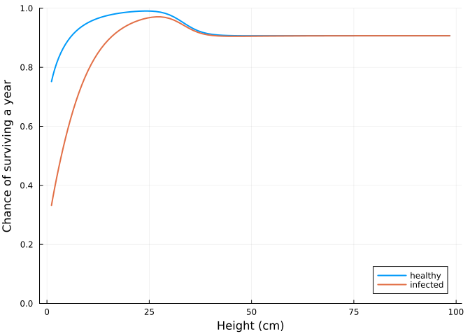
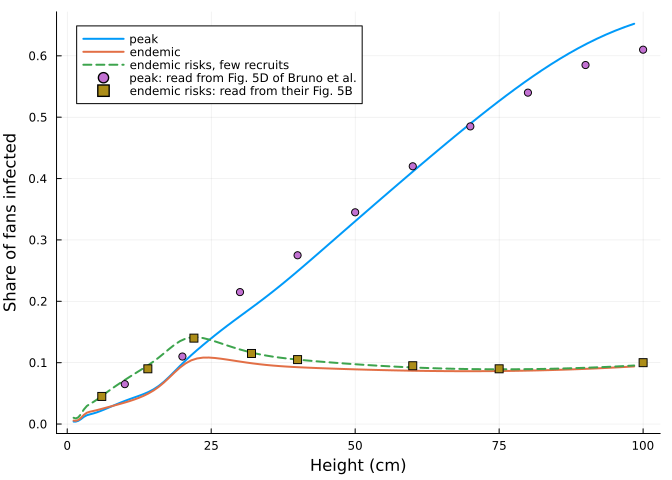
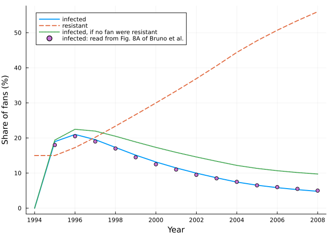
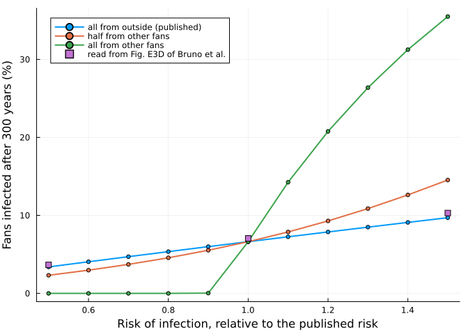

Sea fans and aspergillosis: an integral projection model stratified by infection status
Simon Frost
- Size and infection together
- A fan’s year
- Two strata
- Is this the matrix of the paper?
- Three phases of an epizootic
- Fans that cannot be infected: a third stratum
- Where does the infection come from?
- The mesh does not matter
- What is measured and what is assumed
- References
ENV["GKSwstype"] = "100"
using MatrixCommunityModels
using IntegralProjectionModels: solve, EigenAnalysis, damping_ratio
using PlotsSize and infection together
In the mid-1990s a fungus, Aspergillus sydowii, caused an epizootic (an epidemic in animals) among the sea fans of the Caribbean. A sea fan (Gorgonia ventalina) is a colonial coral shaped like a flat fan. The disease, aspergillosis, kills patches of a colony’s tissue and sometimes the colony. Bruno et al. (2011) followed about 750 tagged colonies in the Yucatán and the Florida Keys from 2002 to 2005, and described the population with an integral projection model (IPM) in which a colony has two attributes: its size, which is continuous, and whether it is infected, which is not.
The thistle vignette used a published IPM with one kind of individual. Here the life cycle is written once and then split into strata: copies of every stage, one for each class of individual, here healthy and infected. stratify does this for any life cycle. The Varroa vignette used it on a matrix model of honey bees; this one uses it on an IPM. The model and nearly all its numbers are published, and the results are checked against the paper. Like every community with a continuous stage, the reef is projected by IntegralProjectionModels.jl, which also analyses it frozen in one phase.
A fan’s year
Size, x, is the cube root of the area of a colony’s healthy tissue in cm², and a fan of size x is about 1.3 x^1.5 cm tall. The time step is a year and numbers are colonies per m². The paper fits these functions to the tagged colonies:
fan = sea_fan_stage() # colonies by size, in 100 cells
x = meshpoints(fan)
height(x) = 1.3 * x^1.5 # cm
logistic(u) = 1 / (1 + exp(-u))
normal(y, mean, sd) = exp(-0.5 * ((y - mean) / sd)^2) / (sd * sqrt(2π))
storms(x) = 0.093 * logistic(2.3 * (x - 8.7)) # large fans are torn loose in storms
survival(x) = 1 - logistic(-0.55 - 0.62x) - storms(x) # of a healthy fan
infected_survival(x) = 1 - logistic(1.3 - 0.67x) - storms(x)
risk(x) = x <= 5.6 ? 0.011 : 0.053 # of infection within the year
recovery = 0.38 # of an infected fan that survives
growth(y, x) = normal(y, 0.682 + 0.945x, 0.53) # size next year of a healthy fan
change(shift) = (y, x) -> 0.95 * normal(y, x + shift, 0.57) + 0.05 * normal(y, x - 3.2, 0.52) # of an infected one
recruits(x) = height(x) >= 20 ? 2.4e-4 * x^3 : 0.0 # of a healthy fan, in proportion to its tissue
recruit_size(y) = normal(y, 1.17, 0.3)
shown = 1 .<= height.(x) .<= 100 # the cells to plot: fans from 1 cm to 1 m tall
plot(height.(x)[shown], [survival.(x)[shown] infected_survival.(x)[shown]]; lw = 2, label = ["healthy" "infected"],
xlabel = "Height (cm)", ylabel = "Chance of surviving a year", ylims = (0, 1), legend = :bottomright)
Small fans die more often than large ones, and among small fans the infected die far more often than the healthy. No storm struck during the study, so the loss of large fans in storms was inferred from the sizes of fans in earlier surveys. A healthy fan grows towards a size of about 12.4, which is 57 cm tall. An infected fan shrinks a little on average, and one in twenty loses much of its tissue. A fan above size 5.6, about 17 cm tall, is nearly five times as likely to be infected in a year as a smaller one. Healthy fans of 20 cm or taller produce recruits in proportion to their tissue; infected fans produce none. The lines for recruits and recruit_size hold the only numbers that are not simply the paper’s: it prints the constant for recruits with a misprint and to one figure, and does not give the size of a recruit. Both are taken up at the end.
The model starts from the life cycle of a healthy fan. Over a year it survives and grows, and if it is 20 cm or taller it produces recruits. Each of these is a named transition with a kernel, which says how size changes over the year for a fan that follows it. Beside them go the kernels of an infected fan that survives the year: one that recovers, and one that stays infected.
life = kernel_net(fan,
:growing => (y, x) -> survival(x) * growth(y, x), # a healthy fan survives and grows
:recruiting => (y, x) -> recruits(x) * recruit_size(y),
:recovering => change(0.27), # an infected fan that recovers
:lingering => change(-0.33)) # one that stays infected
life = births(life, :recruiting)ResponsiveProjectionNet(100 stages, 4 transitions, 0 responses)growing and recruiting alone are a model: the life cycle of a fan that is never infected, which is checked below. There is still only one stage, fan, which holds healthy and infected fans alike, so this net is not yet a model of the disease.
Two strata
stratify makes a copy of the stage for each stratum. For each transition a small matrix says which stratum the transition leaves, the column, and which it enters, the row:
routes = Dict( # rows and columns in the order healthy, infected
:growing => [1 0; 1 0], # from healthy to healthy, and from healthy to infected
:recruiting => [1 0; 0 0], # the recruits of healthy fans are healthy
:recovering => [0 1; 0 0], # from infected to healthy
:lingering => [0 0; 0 1]) # from infected to infected
strata = stratify(life, [:healthy, :infected]; coupling = routes)
(stages = stage_names(strata)[[1, 100, 101, 200]], transitions = transition_names(strata))(stages = [:fan1_healthy, :fan100_healthy, :fan1_infected, :fan100_infected], transitions = [:growing_healthy, :growing_healthy_to_infected, :lingering_infected, :recovering_infected_to_healthy, :recruiting_healthy])Each cell of the mesh now exists twice, as fan1_healthy and fan1_infected, and the name of each transition says where it leads. A healthy fan grows the same in a year whether or not it is infected during it, so growing has become two transitions with the same kernel: growing_healthy for a fan that stays healthy and growing_healthy_to_infected for one that is infected. A zero in a matrix removes the transition between those strata: an infected fan neither grows as a healthy one nor recruits.
What remains is the chance of each fate, which depends on size. It is attached to the transitions of the stratified net as a response. by_trait writes a response as a function of size, and stratum says which stratum’s fans it applies to:
by_hand = respond(strata,
:growing_healthy => ctx -> by_trait(fan, x -> 1 - risk(x); stratum = :healthy),
:growing_healthy_to_infected => ctx -> by_trait(fan, risk; stratum = :healthy),
:recovering_infected_to_healthy => ctx -> by_trait(fan, x -> infected_survival(x) * recovery; stratum = :infected),
:lingering_infected => ctx -> by_trait(fan, x -> infected_survival(x) * (1 - recovery); stratum = :infected))ResponsiveProjectionNet(200 stages, 5 transitions, 4 responses)The fates can be attached here, after stratify, because a response can name the stratum whose cells it applies to. A response attached before stratify applies in every stratum alike, which suits a rate that does not depend on infection, such as the recruitment of a phase below; the chance of infection belongs to healthy fans only.
sea_fan() builds the same net from SEA_FAN_PARAMETERS:
reef = sea_fan()
endemic = SEA_FAN_PHASES.endemic # the rates above; the other phases come later
A = community_matrix(reef, zeros(200), endemic)
maximum(abs, A - to_matrix(by_hand, context(by_hand, zeros(200), NamedTuple(), nothing)))0.0Is this the matrix of the paper?
The paper writes the model as four kernels, from healthy or infected fans to healthy or infected fans (its Eq. 1). kernel_net accepts several continuous stages, so the four can be written out directly, with no strata, and compared:
healthy, infected = ContinuousStage(:healthy, 0.0, 20.0, 100), ContinuousStage(:infected, 0.0, 20.0, 100)
four_kernels = kernel_net([healthy, infected],
:staying_healthy => [(:healthy => :healthy) => (y, x) -> survival(x) * (1 - risk(x)) * growth(y, x)],
:infection => [(:healthy => :infected) => (y, x) -> survival(x) * risk(x) * growth(y, x)],
:recovery => [(:infected => :healthy) => (y, x) -> infected_survival(x) * recovery * change(0.27)(y, x)],
:staying_infected => [(:infected => :infected) => (y, x) -> infected_survival(x) * (1 - recovery) * change(-0.33)(y, x)],
:recruiting => [(:healthy => :healthy) => (y, x) -> recruits(x) * recruit_size(y)])
maximum(abs, A - to_matrix(four_kernels))2.7755575615628914e-17The two agree to rounding error. A second check is that a fan which cannot be infected has the life cycle of a healthy fan, growing and recruiting, and nothing else. sea_fan(resistant = :only), which is used again below, is a population of such fans:
never_infected = kernel_net(fan, :growing => (y, x) -> survival(x) * growth(y, x),
:recruiting => (y, x) -> recruits(x) * recruit_size(y))
maximum(abs, community_matrix(sea_fan(resistant = :only), zeros(100), endemic) - to_matrix(never_infected))0.0If four kernels give the same matrix, the strata have to earn their place. They do so in three ways below. The state can be read by stratum and by size. A response or a pool weight written by size applies to every stratum or to one. And a third stratum needs one more name.
Three phases of an epizootic
The rates above were measured after the worst was over. The authors found that every aspect of the disease they could measure had changed during the epizootic, which is why their title calls it a moving target, and they describe three phases:
for (name, phase) in pairs(SEA_FAN_PHASES)
println(rpad(name, 14), map(value -> round(value; digits = 4), phase))
endpre_epizootic (small_fan_risk = 0.0, large_fan_risk = 0.0, risk_per_cm = 0.0, recovery = 0.38, disease_mortality = 0.0, recruitment = 0.0909)
peak (small_fan_risk = 0.011, large_fan_risk = 0.0498, risk_per_cm = 0.0083, recovery = 0.1, disease_mortality = 0.6188, recruitment = 0.0909)
endemic (small_fan_risk = 0.011, large_fan_risk = 0.053, risk_per_cm = 0.0, recovery = 0.38, disease_mortality = 0.0, recruitment = 1.0)A phase is the environment of a time step. Before the epizootic there was no infection. At its peak the risk of infection of a large fan rose with its height, by 0.0083 for each cm above 20 cm; an infected fan of any size had a further chance of 0.62 of dying in the year, and recovered less often. In both, the reefs received about an eleventh of the recruits of 2003. In the endemic phase the infection persists at a low level.
Within one phase the model is linear, so it has a growth rate and a stable state. ipm_problem freezes the species in a phase as an IPMProblem, which IntegralProjectionModels.jl analyses. The elasticity of the growth rate to a transition is the proportional change in the growth rate when the transition changes by a given proportion. Over all transitions the elasticities sum to one, so each is a share, and because transitions are named it can be had for each of them:
function steady(sp, phase)
frozen = solve(ipm_problem(sp, :sea_fan, zeros(length(sp)), phase), EigenAnalysis())
e = frozen.eigenanalysis # growth rate, stable state and reproductive values
net = frozen_net(sp, :sea_fan, e.stable_dist, phase) # the species in that phase, its transitions still named
elasticity(t) = 100 * e.repro_value' * transition_matrix(net, t) * e.stable_dist / e.lambda
return (rate = e.lambda, state = e.stable_dist, second = 1 / damping_ratio(frozen.kernel_matrices),
elasticity = Dict(t => elasticity(t) for t in transition_names(net)))
end
results = map(phase -> steady(reef, phase), SEA_FAN_PHASES)
# a state of a species, to be read by name
named(sp, n, phase) = context(system(sp)[:sea_fan], n, pool_totals(sp, n, phase), phase).n
for (name, phase) in pairs(SEA_FAN_PHASES)
n = named(reef, results[name].state, phase)
println(rpad(name, 14), "growth rate ", round(results[name].rate; digits = 3), "; ",
round(100 * n[:infected] / n[:fan]; digits = 1), "% of fans infected; second eigenvalue ",
round(results[name].second; digits = 2), " of the first")
endpre_epizootic growth rate 0.949; 0.0% of fans infected; second eigenvalue 0.89 of the first
peak growth rate 0.851; 17.3% of fans infected; second eigenvalue 0.9 of the first
endemic growth rate 1.005; 6.6% of fans infected; second eigenvalue 0.84 of the firstn[:infected] is everything in the infected stratum and n[:fan] every fan. Bruno et al. show growth rates of 0.95 before the epizootic, 0.85 at its peak and 1.009 afterwards (read from their Figs. E2 and E3), 7.05% of fans infected in the endemic phase, and a second eigenvalue 0.84 of the first in that phase, which says how fast the sizes of fans settle after a disturbance. Before the epizootic the population was already declining, for lack of recruits. Two more of their values can be had by changing a phase:
rate(phase) = round(steady(reef, phase).rate; digits = 3)
(peak_with_the_recruits_of_2003 = rate(merge(SEA_FAN_PHASES.peak, (recruitment = 1.0,))),
no_infection_and_the_recruits_of_2003 = rate(merge(SEA_FAN_PHASES.pre_epizootic, (recruitment = 1.0,))))(peak_with_the_recruits_of_2003 = 0.937, no_infection_and_the_recruits_of_2003 = 1.014)They show 0.935 for the first (their Fig. E3) and give 1.01 for a population without the disease.
The paper’s Table E1 divides the elasticity of the growth rate among kinds of transition. Here it is by named transition, in percent, for the three phases:
transitions = [:growing_healthy, :recruiting_healthy, :growing_healthy_to_infected,
:recovering_infected_to_healthy, :lingering_infected]
[transitions [round(results[name].elasticity[t]; digits = 2) for t in transitions, name in keys(SEA_FAN_PHASES)]]5×4 Matrix{Any}:
:growing_healthy 98.02 95.35 87.96
:recruiting_healthy 1.98 3.3 3.39
:growing_healthy_to_infected 0.0 0.52 2.72
:recovering_infected_to_healthy 0.0 0.52 2.72
:lingering_infected 0.0 0.31 3.22The table gives 2.1, 3.3 and 3.5 for reproduction in the three phases, and 100, 98.6 and 91.1 for transitions from healthy to healthy, which are the first two rows together. For the endemic phase it gives 2.8 for infection, 2.8 for recovery and 3.3 for staying infected. For the peak it prints 0.05, 0.05 and 0.03, which leaves its column short of 100; the values here are ten times those.
How many fans are infected depends on their size. n[fan] gives the numbers of fans by size whatever their stratum, and n[fan, :infected] those of one stratum. The paper’s Fig. 5 has two such curves: one for the peak, and one for the risks of the endemic phase, which it uses to show that those risks cannot produce what was seen at the peak.
function infected_by_size(result, phase)
n = named(reef, result.state, phase)
return (n[fan, :infected] ./ n[fan])[shown]
end
few_recruits = merge(endemic, (recruitment = 1 / 11,)) # the endemic risks, with the recruits of the epizootic years
curves = [infected_by_size(results.peak, SEA_FAN_PHASES.peak), infected_by_size(results.endemic, endemic),
infected_by_size(steady(reef, few_recruits), few_recruits)]
plot(height.(x)[shown], curves; lw = 2, ls = [:solid :solid :dash], label = ["peak" "endemic" "endemic risks, few recruits"],
xlabel = "Height (cm)", ylabel = "Share of fans infected", legend = :topleft)
scatter!(10:10:100, [0.065, 0.11, 0.215, 0.275, 0.345, 0.42, 0.485, 0.54, 0.585, 0.61];
label = "peak: read from Fig. 5D of Bruno et al.")
scatter!([6, 14, 22, 32, 40, 60, 75, 100], [0.045, 0.09, 0.14, 0.115, 0.105, 0.095, 0.09, 0.10]; marker = :square,
label = "endemic risks: read from their Fig. 5B")
At the peak more than half of the largest fans were infected, and these are the fans that produce the recruits. The paper’s curve for the endemic risks is matched by the dashed line, which has the recruitment of the epizootic years; the paper does not say which recruitment it used. With fewer recruits there are fewer small healthy fans, so a larger share of the small fans are infected ones that have shrunk.
Fans that cannot be infected: a third stratum
Prevalence, the share of fans infected, fell from 1997 onwards. Bruno et al. asked whether selection could explain this: if some fans were resistant, the epizootic would remove the others. They supposed that 15% of fans could not be infected, and that their recruits could not either. That is a third stratum:
three = sea_fan(resistant = true)
(stages = stage_names(three, :sea_fan)[[1, 101, 201]], transitions = transition_names(system(three)[:sea_fan]))(stages = [:fan1_healthy, :fan1_infected, :fan1_resistant], transitions = [:growing_healthy, :growing_healthy_to_infected, :growing_resistant, :lingering_infected, :recovering_infected_to_healthy, :recruiting_healthy, :recruiting_resistant])A resistant fan has the life cycle of a healthy fan and is never infected: growing and recruiting lead from resistant to resistant, and no chance of infection is attached to them. Inside sea_fan this is one more name in the list of strata and one more entry in two of the routes.
The projection starts in 1994 from the stable state of the phase before the epizootic, with 15% of fans of every size resistant. From then on the phase is the peak. As in the paper, the risk of the other fans is raised by 15%, and recruitment rises to its level of 2003 as the paper’s Appendix C describes:
before = named(reef, results.pre_epizootic.state, SEA_FAN_PHASES.pre_epizootic)[fan] # fans by size before the epizootic
n1994 = [0.85 .* before; zeros(100); 0.15 .* before] # healthy, infected, resistant
peak = SEA_FAN_PHASES.peak
raised = merge(peak, (small_fan_risk = 1.15 * peak.small_fan_risk, large_fan_risk = 1.15 * peak.large_fan_risk,
risk_per_cm = 1.15 * peak.risk_per_cm))
rising(phase) = [merge(phase, (recruitment = min(1.0, exp(-0.3 * (2003 - year))),)) for year in 1994:2007]
epizootic = rising(raised)
share(sol, stratum) = 100 .* stage_total(sol, :sea_fan, stratum) ./ abundance(sol, :sea_fan)
sol = project(three, n1994, epizootic)
without = project(reef, [before; zeros(100)], rising(peak))
plot(1994:2008, [share(sol, :infected) share(sol, :resistant) share(without, :infected)]; lw = 2,
label = ["infected" "resistant" "infected, if no fan were resistant"], ls = [:solid :dash :dot],
xlabel = "Year", ylabel = "Share of fans (%)", xticks = 1994:2:2008, legend = :topleft)
scatter!(1995:2008, [18, 20.5, 19, 17, 14.5, 12.5, 11, 9.5, 8.5, 7.5, 6.5, 6, 5.5, 5];
label = "infected: read from Fig. 8A of Bruno et al.")
(infected_1996 = round(share(sol, :infected)[3]; digits = 1), infected_2008 = round(share(sol, :infected)[end]; digits = 1),
resistant_2008 = round(share(sol, :resistant)[end]; digits = 1),
infected_2008_if_no_fan_were_resistant = round(share(without, :infected)[end]; digits = 1),
fans_left_in_2008 = round(abundance(sol, :sea_fan)[end] / abundance(sol, :sea_fan)[1]; digits = 2),
tissue_left_in_2008 = round(pool_totals(three, sol.u[end, :], peak).tissue / pool_totals(three, n1994, peak).tissue; digits = 2))(infected_1996 = 21.0, infected_2008 = 4.8, resistant_2008 = 56.0, infected_2008_if_no_fan_were_resistant = 9.7, fans_left_in_2008 = 0.28, tissue_left_in_2008 = 0.12)The projection follows the paper’s, in which resistant fans rise from 15% to about 53% of all fans by 2008. Prevalence was observed to fall from about 30% in 1997 to under 10% by 2003. Most of the fall in this projection does not need resistance. With no resistant fans prevalence still falls from 22% to 10%, because recruitment recovers and small fans, which are seldom infected, become a larger share of the population. Selection for resistance takes it from 10% to 5%.
The scenario holds the rates of the peak for 14 years, and the reef loses seven in ten of its fans and nearly nine tenths of its tissue. That is more than was seen: the Florida Keys lost more than half of their sea fan tissue, with little change in the number of fans (Kim & Harvell 2004). The scenario shows that selection could be fast enough; it is not a reconstruction of the epizootic.
Resistant fans exchange nothing with the others, so they could as well be a species of their own. The result is the same:
two_species = community(reef, sea_fan(resistant = :only, name = :resistant_fans))
maximum(abs, project(two_species, n1994, epizootic).u - sol.u)0.0Strata suit classes of individuals that live in one place, as infection states do: a response written by size sees the whole population. Populations in different places, each with its own crowding, are better written as species joined by pools, as in the metacommunity vignette.
Where does the infection come from?
In the published model the chance of infection depends on a fan’s size and on the phase, and not on how many fans are infected. The fungus lives on land and is not known to form spores in sea water, and Bruno et al. cite surveys in which prevalence did not depend on the density of fans, so they take it to arrive from outside the reef.
There is also evidence that fans infect one another. Where prevalence was high, infected fans were clustered at distances of 2 to 8 m (Jolles et al. 2002), and a snail that feeds on sea fans and moves among them passes live fungus in its faeces (Rypien & Baker 2009). A pathogen carried by such a grazer would be met in proportion to the share of tissue that is infected, whatever the density of fans, so the surveys do not rule it out. What follows is an extension that asks what difference this would make. The paper has no such term, and the share q of infections that come from other fans is not known.
At the stable state of the endemic phase a share of the tissue is infected:
pools = pool_totals(reef, results.endemic.state, endemic)
infected_tissue = pools.infectious / pools.tissue
round(infected_tissue; digits = 3)0.092sea_fan adds the tissue of its fans to the pool tissue, and that of its infected fans to the pool infectious. Suppose that a share q of the published risk is in proportion to the share of tissue infected, scaled so that the risk is the published one at the stable state. A response can read the reef’s own state to say so. ctx.n[fan] holds the fans in each cell whatever their stratum, and ctx.n[fan, :infected] the infected ones. The function below gives the stratified net responses by size that read the numbers in the cells. sea_fan takes the same two totals from the pools instead, so that other hosts can add to them. For one population the two are the same:
area = x .^ 3 # cm² of tissue on a fan of each size
function passed_among_fans(q)
pressure(ctx) = 1 - q + q / infected_tissue * sum(area .* ctx.n[fan, :infected]) / sum(area .* ctx.n[fan])
net = respond(strata,
:growing_healthy => ctx -> by_trait(fan, 1 .- pressure(ctx) .* risk.(x); stratum = :healthy),
:growing_healthy_to_infected => ctx -> by_trait(fan, pressure(ctx) .* risk.(x); stratum = :healthy),
:recovering_infected_to_healthy => ctx -> by_trait(fan, x -> infected_survival(x) * recovery; stratum = :infected),
:lingering_infected => ctx -> by_trait(fan, x -> infected_survival(x) * (1 - recovery); stratum = :infected))
return species(:sea_fan, net)
end
disturbed = results.endemic.state .* (1 .+ 0.5 .* sin.(1:200)) # away from the stable state
half = sea_fan(outside = 0.5, transmission = 0.5 / infected_tissue)
maximum(abs, project(passed_among_fans(0.5), disturbed, fill(nothing, 30)).u - project(half, disturbed, fill(endemic, 30)).u)1.3877787807814457e-17Now change the risk of infection by a factor and project for 300 years:
scaled(factor) = merge(endemic, (small_fan_risk = factor * endemic.small_fan_risk, large_fan_risk = factor * endemic.large_fan_risk))
function prevalence(sp, factor; years = 300)
n = named(sp, project(sp, results.endemic.state, fill(scaled(factor), years)).u[end, :], endemic)
return 100 * n[:infected] / n[:fan]
end
factors = 0.5:0.1:1.5
sources = [sea_fan(outside = 1 - q, transmission = q / infected_tissue) for q in (0.0, 0.5, 1.0)]
plot(factors, [[prevalence(sp, factor) for factor in factors] for sp in sources]; lw = 2, marker = :circle, ms = 3,
label = ["all from outside (published)" "half from other fans" "all from other fans"],
xlabel = "Risk of infection, relative to the published risk", ylabel = "Fans infected after 300 years (%)", legend = :topleft)
scatter!([0.5, 1.0, 1.5], [3.65, 7.05, 10.3]; marker = :square, label = "read from Fig. E3D of Bruno et al.")
If all infection comes from outside, prevalence rises and falls with the risk, as in the paper. If all of it comes from other fans there is a threshold:
among = sources[3]
[factor => round(prevalence(among, factor; years = 1000); digits = 2) for factor in (0.9, 0.95, 1.0, 1.05)]4-element Vector{Pair{Float64, Float64}}:
0.9 => 0.0
0.95 => 2.32
1.0 => 6.63
1.05 => 10.59Below 0.92 of the published risk the infection dies out. An infection that maintained itself on the reef at the prevalence observed would be close to its threshold.
The pools are where another host joins. Resistant fans, as a species of their own, add tissue that is never infected. Give the reef one resistant fan for every three others:
resistant_fans = sea_fan(resistant = :only, name = :resistant_fans)
start = [results.endemic.state; named(reef, results.endemic.state, endemic)[fan] ./ 3]
for (label, sp) in (("all from outside", reef), ("all from other fans", among))
century = project(community(sp, resistant_fans), start, fill(endemic, 100))
println(rpad(label, 22), "% of the other fans infected after 0, 10, 50 and 100 years: ",
round.(share(century, :infected)[[1, 11, 51, 101]]; digits = 2))
endall from outside % of the other fans infected after 0, 10, 50 and 100 years: [6.63, 6.63, 6.63, 6.63]
all from other fans % of the other fans infected after 0, 10, 50 and 100 years: [6.63, 1.96, 0.02, 0.0]Resistant fans protect the others only if the infection passes among fans. Then a quarter of the tissue being resistant is enough to remove it, since it takes the infection below its threshold.
The mesh does not matter
for cells in (50, 100, 200)
sp = sea_fan(; cells)
e = solve(ipm_problem(sp, :sea_fan, zeros(2cells), endemic), EigenAnalysis()).eigenanalysis
n = named(sp, e.stable_dist, endemic)
println(cells, " cells: growth rate ", round(e.lambda; digits = 4), ", ", round(100 * n[:infected] / n[:fan]; digits = 2),
"% of fans infected")
end50 cells: growth rate 1.0058, 6.61% of fans infected
100 cells: growth rate 1.0054, 6.63% of fans infected
200 cells: growth rate 1.0054, 6.63% of fans infectedWhat is measured and what is assumed
| Quantity | Value | Source |
|---|---|---|
| Growth and survival of healthy and infected fans; chance of infection and of recovery | fitted functions | Bruno et al. 2011, p. 130 and Eqs. 5 to 7; colonies followed in the Yucatán, 2002 to 2005 |
| Loss of large fans in storms | up to 0.093 a year | their Appendix B; inferred from the sizes of fans in 1997 |
Height of a fan of size x | 1.3 x^1.5 cm | their Appendix A |
| Fans that reproduce | healthy, 20 cm or taller | their p. 130 |
| Peak: risk by height, death from the disease, recovery | 0.05 at 20 cm and 0.0083 more per cm; 0.62; 0.10 | their Appendix D; fitted to prevalence by size in the Florida Keys, 1997 to 1999 |
| Peak: risk of small fans | 0.011 | fitted in the paper but not tabulated; the endemic value, which its Fig. 8B resembles |
| Recruitment before 2003 | 11 times lower in 1995, rising by 35% a year | their Appendix C |
| Recruits per cm² of reproductive tissue | 2.4 × 10⁻⁴ | printed as “2 × 10⁴”; read as 2 × 10⁻⁴ and calibrated within that rounding to the paper’s growth rates |
| Size of a recruit | normal, mean 1.17 and sd 0.3 | not in the paper; sd assumed, mean set so that 22% of recruits die in their first year, as the paper reports |
| Resistant fans | 15% in 1994; risk of the others raised by 15% | a scenario of the paper’s (its Fig. 8) |
| Share of infections that come from other fans | 0, 0.5 or 1 | assumed; not in the paper |
| Such infection is in proportion to the share of tissue infected | assumed |
The paper gives the recruitment constant to one figure: 2 × 10⁻⁴, once the misprint is corrected. With that value:
printed = sea_fan(parameters = merge(SEA_FAN_PARAMETERS, (fecundity = 2.0e-4,)))
as_printed = map(phase -> steady(printed, phase), SEA_FAN_PHASES)
endemic_as_printed = named(printed, as_printed.endemic.state, endemic)
(growth_rates = map(result -> round(result.rate; digits = 4), as_printed),
infected_in_the_endemic_phase = round(100 * endemic_as_printed[:infected] / endemic_as_printed[:fan]; digits = 2))(growth_rates = (pre_epizootic = 0.9455, peak = 0.8458, endemic = 0.9993), infected_in_the_endemic_phase = 6.95)The model here differs from the paper, or leaves it unexplained, in these ways:
- With the recruitment constant as printed, 2.0 × 10⁻⁴, the growth rates of the three phases are 0.005 to 0.010 below the paper’s, and 7.0% of fans are infected in the endemic phase. With 2.4 × 10⁻⁴, used here, the growth rates are within 0.004 of the paper’s and 6.6% of fans are infected, against the paper’s 7.05%.
- The paper’s Fig. E3 shows 47.5% of fans infected at the stable state of the peak. The model here gives 17% of fans and 23% of tissue, or 9% of fans with the recruits of 2003, the setting that reproduces the growth rate in the same figure. This value of the paper’s is not reproduced, and the reason is not known. The other checks on the peak agree: the growth rates, the elasticities, prevalence by size and the projection with resistant fans.
- At the peak, prevalence by size is within 0.05 of the paper’s Fig. 5D. It is lower here for fans under 40 cm and higher for the largest.
- The paper’s Appendix A converts height to size with a constant, 0.67, that does not follow from its own relation between height and area, which gives 0.84. The heights quoted in the paper agree with that relation, which is used here.
- The risk of infection rises at size 5.6, about 17 cm, in the paper’s Eq. 5 and at 20 cm in its Appendix D. Here it rises at size 5.6 in every phase.
- A fan that shrinks below size 0 is lost. The paper does not say how it treated such fans.
- The paper also has a variant in which recruits arrive from elsewhere at a fixed rate, and uses it to ask how long a reef takes to recover. Neither is included.
- The model has no crowding, so a population grows or declines without limit. The results used here are growth rates and shares, which do not depend on how many fans there are.
Values described as read from a figure were read by eye from the published figure. Bruno et al. (2011) and its five appendices were read in full. Jolles et al. (2002), Kim & Harvell (2004) and Rypien & Baker (2009) were read as abstracts. That prevalence does not depend on the density of fans, and that the fungus does not form spores in sea water, are taken from Bruno et al., who cite Kim & Harvell (2004) and others.
References
Bruno, J. F., Ellner, S. P., Vu, I., Kim, K. & Harvell, C. D. (2011). Impacts of aspergillosis on sea fan coral demography: modeling a moving target. Ecological Monographs 81, 123-139. Appendices A to E: Ecological Archives M081-006.
Jolles, A. E., Sullivan, P., Alker, A. P. & Harvell, C. D. (2002). Disease transmission of aspergillosis in sea fans: inferring process from spatial pattern. Ecology 83, 2373-2378.
Kim, K. & Harvell, C. D. (2004). The rise and fall of a six-year coral-fungal epizootic. American Naturalist 164, S52-S63.
Rypien, K. L. & Baker, D. M. (2009). Isotopic labeling and antifungal resistance as tracers of gut passage of the sea fan pathogen Aspergillus sydowii. Diseases of Aquatic Organisms 86, 1-7.